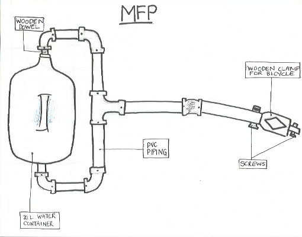

The group project was created as a final project in the Systems Design Introduction to Design (SYDE 161).
In this course we learned about the techniques and processes to creating an effective design to a given solution.
The final project was completed over the term, the idea was to create an solution in a third world country that will enhance transportation, health, or resouces.
A solution must be created to reduce the negative physical health effects caused by transporting water, as well as the time spent in transport.
This solution should be a design that will reduce the time spent fetching water each day by women and children by 75% to allow time for other more productive tasks,
and must not require the user to carry heavy objects above the ground.
Throughout this project a low-fidelity, medium-fidelity, and high-fidelity prototypes were created. To justify the groups choice of final design, a final report was created
which included many justificaion such as; situation of concern (SOC), Quality Function Deployment Chart (QFD), Functions-Means Chart, Morphological chart, and Function Breakdown.
Skills Accquired: